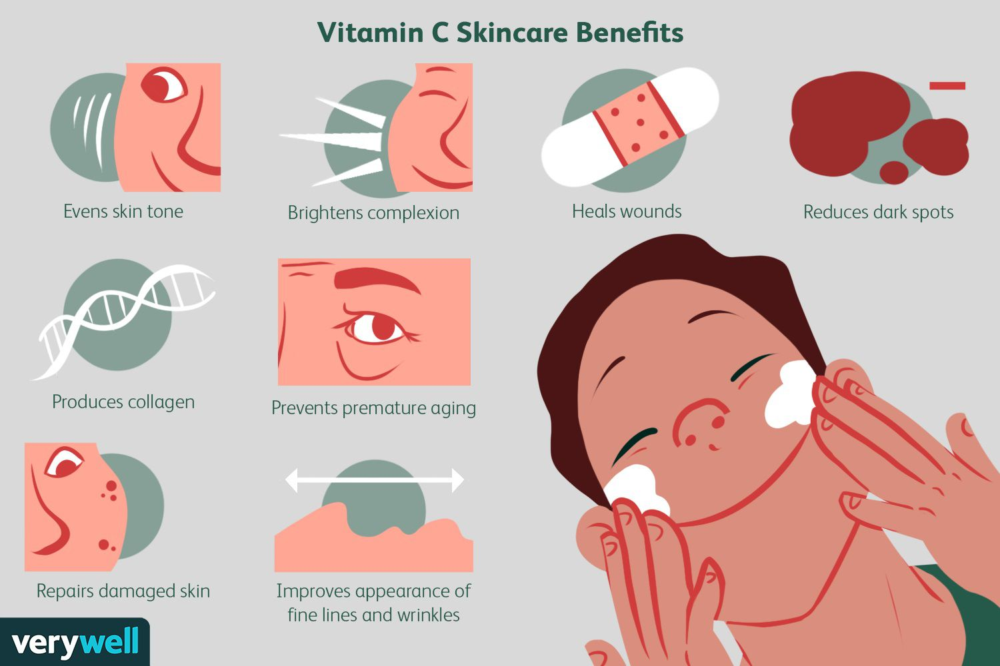
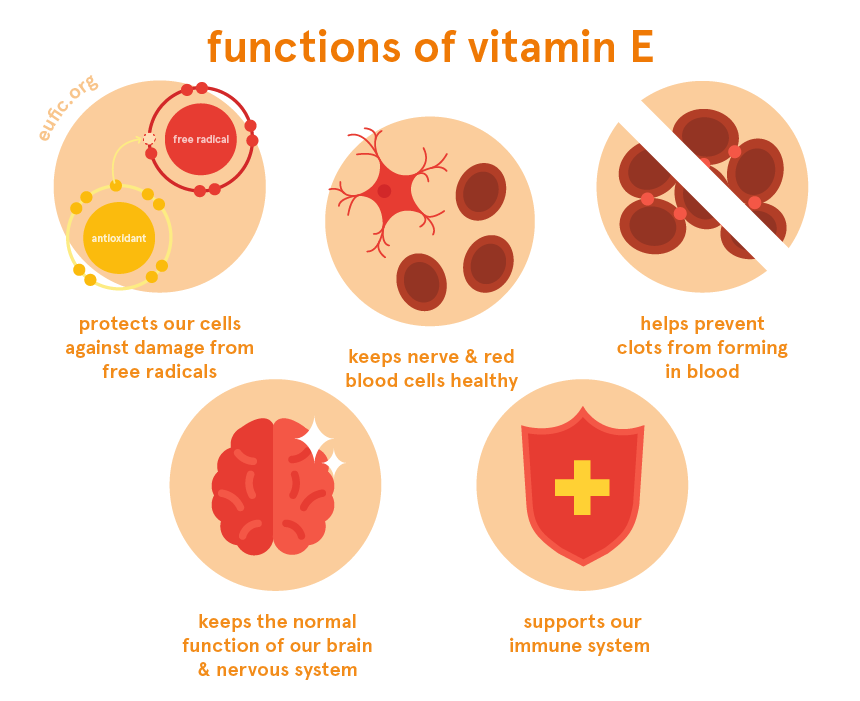

-Vitamins C -

for the growth and repair of tissues in all parts of your body. It helps the body make collagen, an important protein used to make skin, cartilage, tendons, ligaments, and blood vessels. Vitamin C is needed for healing wounds, and for repairing and maintaining bones and teeth.
Vitamin C သည်သင့်ခန္ဓာကိုယ် အစိတ်အပိုင်းအားလုံးရှိ တစ်ရှူးများ ကြီးထွားခြင်းနှင့် ပြုပြင်ခြင်းအတွက်။ အရေပြား၊ အရိုးနု၊ အရွတ်များ၊ အရွတ်များနှင့် သွေးကြောများ ဖန်တီးရာတွင် အသုံးပြုသော အရေးကြီးသော ပရိုတင်းတစ်မျိုးဖြစ်သည့် ကော်လာဂျင်ကို Vitamin C က ဖန်တီးပေးသည်။ Vitamin C သည် ဒဏ်ရာများကို ကုသရန်နှင့် အရိုးနှင့် သွားများကို ပြုပြင်ထိန်းသိမ်းရန်အတွက် လိုအပ်ပါသည်။
-Vitamins E -

Vitamin E neutralizes free radicals, which are molecules produced when the body breaks down food or is exposed to radiation, tobacco smoke, or other sources. Free radicals may play a role in cancer, heart disease, and other diseases.
Vitamin E သည် အစာခြေသောအခါ သို့မဟုတ် ဓာတ်ရောင်ခြည်၊ ဆေးလိပ်မီးခိုး သို့မဟုတ် အခြားရင်းမြစ်များနှင့် ထိတွေ့သောအခါ ခန္ဓာကိုယ်မှထုတ်လုပ်သော မော်လီကျူးများဖြစ်သည့် ဖရီးရယ်ဒီကယ်များကို ချေဖျက်ပေးသည်။ ဖရီးရယ်ဒီကယ်များသည် ကင်ဆာ၊ နှလုံးရောဂါနှင့် အခြားရောဂါများကို ဖြစ်စေနိုင်သည်။
-Vitamins K -
Vitamin K is known as the "clotting vitamin" because it helps the body form clots to stop bleeding. It does this by acting as a cofactor for proteins called clotting factors, which activate other proteins that cause blood to clot. Without vitamin K, the liver can't produce these clotting factors, and blood won't clot. A severe vitamin K deficiency can cause bruising and bleeding problems.
Vitamin K ကို သွေးခဲခြင်းကို ရပ်တန့်ရန် ခန္ဓာကိုယ်မှ သွေးခဲများကို ကူညီပေးသောကြောင့် သွေးခဲခြင်းကို Vitamin K ဟုခေါ်သည်။ ၎င်းသည် သွေးခဲစေသော အခြားပရိုတင်းများကို လှုံ့ဆော်ပေးသော သွေးခဲဖြစ်စေသော ပရိုတင်းများအတွက် cofactor အဖြစ် လုပ်ဆောင်ခြင်းဖြင့် ၎င်းကို လုပ်ဆောင်သည်။ Vitamin K မရှိရင် အသည်းက ဒီသွေးခဲစေတဲ့အချက်တွေကို မထုတ်နိုင်သလို သွေးခဲလည်း မခဲနိုင်ပါဘူး။ ပြင်းထန်သော Vitamin K ချို့တဲ့ပါက ပွန်းပဲ့ခြင်းနှင့် သွေးထွက်ခြင်းဆိုင်ရာ ပြဿနာများကို ဖြစ်စေနိုင်သည်။